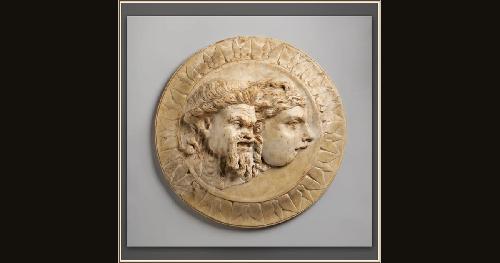

Marble disk with two theater masks in relief
Roman · 3rd quarter of 1st century CE · met
Two carved theater masks share a Roman marble disk: one bearded and open mouthed, the other youthful. Aristotle discusses comic masks and says their first supplier is unknown (5) Explore its place in Aristotle's Poetics, Poetics, section 5.